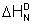

Earth, showing its blue, water side
Water possesses such properties that ensure that it is a requirement for life to start and continue. Other materials cannot replace it.
 Can
life exist without water?
Can
life exist without water?
 Consequences of changes in water’s hydrogen bond strength
Consequences of changes in water’s hydrogen bond strength
 Estimating the effect of changes in water hydrogen bond strength
Estimating the effect of changes in water hydrogen bond strength
 Effect of water hydrogen bond strength on melting and boiling point
Effect of water hydrogen bond strength on melting and boiling point
 Effect of hydrogen bond strength on the temperature of maximum density
Effect of hydrogen bond strength on the temperature of maximum density
 Effect of water hydrogen bond strength on kosmotropes and chaotropes
Effect of water hydrogen bond strength on kosmotropes and chaotropes
 Effect of water hydrogen bond strength on its dissociation
Effect of water hydrogen bond strength on its dissociation
 Effect of water hydrogen bond strength on biomolecule hydration
Effect of water hydrogen bond strength on biomolecule hydration
 Effect of water hydrogen bond strength on its other physical properties
Effect of water hydrogen bond strength on its other physical properties
 Conclusions concerning water and life
Conclusions concerning water and life
'life is water dancing to the tune of solids'
Albert Szent-Gyorgyin
Water and life are closely linked. This has been recognized throughout history by civilizations and religions and is still the case with scientists today [1011]. Liquid water is required for life to start c and for life to continue. No enzymes work in the absence of water molecules. No other liquid can replace water. We are very fortunate, therefore, that our planet is so well endowed. Water is a common material in the Universe, being found as widely dispersed gaseous molecules and as amorphous ice in tiny grains and much larger asteroids, comets, and planets, but water needs particularly exacting conditions to exist as a liquid as it does on Earth. It is most likely that this water arrived from multiple sources, such as comets and asteroids, somewhat after solid planet Earth was formed [1015].
The development of life required this water. How this was achieved is a question that has interested many since well before the early experiments producing amino acids from simpler molecules by electric discharge in aqueous systems [1016]. Subsequently, various theories have been propounded but without a consensus except for the critical involvement of liquid water [1017].
Water possesses particular properties that cannot be found in other materials and that are required for life-giving processes (but see also [1153]). These properties are brought about by the hydrogen-bonded environment, particularly evident in liquid water [1423]. Hydrogen bonds are roughly tetrahedrally and arranged such that when strongly formed the local clustering expands, decreasing the density. Such low-density structuring naturally occurs at low and supercooled temperatures and gives rise to many physical and chemical properties that evidence the particular uniqueness of liquid water. If aqueous hydrogen bonds were actually somewhat stronger, then water would behave similar to a glass, whereas if they were weaker then water would be a gas and only exist as a liquid at sub-zero temperatures.
The quantitative and qualitative consequences of strengthening or weakening of the hydrogen bond in water are considered here. If the hydrogen bond strength was slightly different from its natural value, then there may be considerable consequences for life. Water would not be liquid on the surface of Earth at its average temperature if the hydrogen bonds were as little changed as 7% stronger or 29% weaker. The temperature of maximum density naturally occurring at about 4 °C would disappear if the hydrogen bonds were just 2% weaker. Significant consequences for life are to be found if the hydrogen bonds did not have their natural strength. Even very slight strengthening of the hydrogen bonds may have substantial effects on normal metabolism. Water dissociation becomes much less evident if the hydrogen bonds are just a few percent stronger, but pure water contains considerably more H+ ions if they are few percent weaker. The important alkali metal ions Na+ and K+ lose their distinctive properties if the hydrogen bonds are 11% stronger or 11% weaker, respectively. Hydration of proteins and nucleic acids depends significantly on the relative strength of the biomolecule-water interactions compared with the water-water hydrogen bond interactions. Stronger water hydrogen bonding leads to water molecules clustering together and so not being available for biomolecular hydration. Generally, the extended denatured proteins become more soluble in water if the hydrogen bonds become substantially stronger or weaker. If the changes in this bonding are sufficient, present natural globular proteins cannot exist in liquid water. [Back to Top  ]
]
How much variation in water’s hydrogen bond is acceptable for life to exist? A superficial examination gives the range of qualitative effects as indicated below.
Water hydrogen bond strength |
Main consequence |
|---|---|
No Hydrogen-bonding at all |
No life |
Hydrogen bonds slightly weaker |
Life at lower temperatures |
No change |
Life as we know it |
Hydrogen bonds slightly stronger |
Life at higher temperatures |
Hydrogen bonds very strong |
No life |
Intriguingly, liquid water acts in subtly different manners as circumstances change, responding to variations in the physical and molecular environments and occasionally acting as though it were present as more than one liquid phase. Sometimes liquid water is free-flowing, while at other times, in other places or under subtly different conditions, it acts more like a weak gel. Shifts in the hydrogen bond strength may fix water’s properties at one of these extremes to the detriment of processes requiring the opposite character. Evolution has used the present natural responsiveness and variety in the liquid water properties such that it is now required for life as we know it. DNA would not form helices able to both zip and unzip without the present hydrogen bond strength. Enzymes would not possess their 3-D structure without it, nor would they retain the controlled flexibility required for their biological action. Compartmentalization of life’s processes by using membranes with subtle permeabilities would not be possible without water’s intermediate hydrogen bond strength. In liquid water, the balance between the directional component of hydrogen bonding and the isotropic van der Waals attractions is finely poised. Increased strength of the hydrogen bond directionality gives rise to ordered clustering, with consequential effects on physical parameters tending towards a glass-like state, whereas reducing its strength reduces the size and cohesiveness of the clusters with the properties of water then tending towards those of its isoelectronic neighbors methane and neon, where only van der Waals attractions remain.
Changes in protein stability with temperature
Shown opposite (and below) are variations in water’s physical properties with changes in its hydrogen bond strength. b
Quite small percentage changes in the strength of the aqueous hydrogen bond may give rise to large percentage changes in such physical properties as melting point, boiling point, density, and viscosity. Some of these potential changes may not significantly impinge on life’s processes (e.g., compressibility or the speed of sound), but others are of paramount importance.
Although, in most cases, weakening or strengthening of the hydrogen bond strengths may cause contrary effects on the physical properties, this is not always the case if the hydrogen bond strength tends towards high or low extremes.
| Property | Change on hydrogen-bond strengthening |
Change on hydrogen-bond weakening |
|---|---|---|
Melting point |
Increase |
Decrease |
Boiling point |
Increase |
Decrease |
State, at ambient conditions on Earth |
|
|
Adhesion |
Decrease |
Decrease |
Cohesion |
Increase |
Decrease |
Compressibility |
Increase |
Decrease |
Density |
Decrease |
Increase |
Dielectric constant |
Increase |
Decrease |
Diffusion coefficient |
Decrease |
Increase |
Dissociation |
Decrease |
Increase |
Enthalpy of vaporization |
Increase |
Decrease |
Glass transition |
Increase |
Decrease |
Solubility, hydrophile |
Decrease |
Decrease |
Solubility, small hydrophobe |
Increase |
Decrease |
Specific heat |
Increase |
Decrease |
Surface tension |
Increase |
Decrease |
Thermal conductivity |
Decrease |
Increase |
Viscosity |
Increase |
Decrease |
Adhesion and hydrophilic solubility both decrease on hydrogen bond strengthening due to increased water-water interactions reducing water’s ability to bind to the hydrophilic or molecular surface. On hydrogen bond weakening, they both decrease due to the reduced water-surface or water-solute interactions. Strong hydrogen bonding eases the formation of expanded cavities as evidenced in the clathrate ices, and which can accommodate small hydrophobic molecules, so increasing their solubility. However, such small hydrophobic molecules will also be more easily dissolved when weak hydrogen bonding allows more facile cavity formation to enable their entry into solution. [Back to Top  ]
]
Estimates of the physical consequences due to variations in the hydrogen bond strength may vary from one method to another. However, the data above indicates that relatively small changes in hydrogen bond strength may have some relatively large effects. Strengthening hydrogen bonding has particularly important effects on viscosity and diffusion, indicated by the large changes occurring in supercooled water.
It is possible to investigate the effect that changes in the hydrogen-bonding strength of water make in its properties by examining the actual properties of water or other molecules with different hydrogen bond strengths. However, different methods, materials or conditions have weaknesses in their utility. The possibilities for examining the effects of varying hydrogen bond strengths are:
In the following discussion, the effects of varying hydrogen bond strength on individual physical properties, and the consequences for life, are initially independently discussed without regard to other changes that might also be occurring at the same time, such as changes in the physical state of water. [Back to Top  ]
]
In ice, all water molecules participate in four hydrogen bonds (two as donor and two as acceptor) and are held relatively static. In liquid water, some of the weaker hydrogen bonds must be broken to allow the molecules to move around. The considerable energy required for breaking these bonds must be supplied during the melting process, and only a relatively minor amount of energy is reclaimed from the volume change. The free energy change (ΔG = ΔH - TΔS) must be zero at phase changes such as the melting or boiling points. As the temperature of liquid water decreases, the number of hydrogen bonds increases and water's entropy decreases. Melting will only occur when there is sufficient entropy change to compensate for the energy required for the bond breaking. The low entropy (high organization) of liquid water causes this melting point to be high. If the hydrogen bond strength (that is, enthalpy change) in water is raised, then the melting point must rise for the free energy change to stay zero.
At the temperature of the phase change, this free energy is zero, so on melting (solid  liquid) ΔHm = TmΔSm and on vaporization (liquid
liquid) ΔHm = TmΔSm and on vaporization (liquid  gas) ΔHv = TvΔSv. In order to calculate the hydrogen bond strength, it is assumed that the entropy changes during the phase changes remain constant with respect to the temperature range. The enthalpy change required to equal the temperature times this entropy change is regarded as the hydrogen bond strength required at the melting point. Thus, the percentage increase in the hydrogen bond strength is given by 100 ˣ (TΔHm/Tm –ΔHT)/ ΔHT, where ΔHT is the bond enthalpy at temperature T and ΔHm is the bond enthalpy at its normal melting point Tm. There is considerable hydrogen bonding in liquid water, resulting in high cohesion that prevents water molecules from being easily released from the water's surface. Consequentially, the vapor pressure is reduced, and water has a high boiling point. Using a similar argument to that used above for melting point, the percentage reductions in the hydrogen bond strength that result in lower boiling points are given by 100 ˣ (T ΔHv /Tv –ΔHT)/ ΔHT, where ΔHv is the bond enthalpy at its normal boiling point Tv under one-atmosphere pressure.
gas) ΔHv = TvΔSv. In order to calculate the hydrogen bond strength, it is assumed that the entropy changes during the phase changes remain constant with respect to the temperature range. The enthalpy change required to equal the temperature times this entropy change is regarded as the hydrogen bond strength required at the melting point. Thus, the percentage increase in the hydrogen bond strength is given by 100 ˣ (TΔHm/Tm –ΔHT)/ ΔHT, where ΔHT is the bond enthalpy at temperature T and ΔHm is the bond enthalpy at its normal melting point Tm. There is considerable hydrogen bonding in liquid water, resulting in high cohesion that prevents water molecules from being easily released from the water's surface. Consequentially, the vapor pressure is reduced, and water has a high boiling point. Using a similar argument to that used above for melting point, the percentage reductions in the hydrogen bond strength that result in lower boiling points are given by 100 ˣ (T ΔHv /Tv –ΔHT)/ ΔHT, where ΔHv is the bond enthalpy at its normal boiling point Tv under one-atmosphere pressure.
Changes in M.Pt and B.Pt with water's hydrogen bond strength
Opposite shows how the bond strength increases affect the melting point and how bond strength decreases affect the boiling point. The resulting relationship shows that water would freeze at the average surface temperature of Earth (15 °C) with a 7% strengthening in water’s hydrogen bond, or it would boil on a 29% weakening. At our body temperature (37 °C), the strengthening required for freezing is 18%, and the weakening required to turn water into steam is 22%. The melting and boiling points of other liquids show that these values are reasonable.
D2O has a melting point almost 4 °C higher than H2O with bond strength 2% higher, which values fit on the above melting point line. Hydrogen sulfide, which does form hydrogen bonds with strong bases but is poor proton donor, has a boiling point of -60 °C with intermolecular interactions only 20% of that of water [1018]. Hydrogen fluoride and hydrogen cyanide both possess hydrogen bond interactions slightly greater than 50% of that of water and boil at 20 °C and 26 °C, respectively. [Back to Top  ]
]
The high density of liquid water is due mainly to the cohesive nature of the hydrogen-bonded network. This reduces the free volume and ensures a relatively high density, compensating for the partial open nature of the hydrogen-bonded network. It is usual for liquids to expand when heated at all temperatures. However, at 4 °C, water expands on heating or cooling. The density maximum is brought about by the opposing effects on an increase in temperature, causing (a) structural collapse of the tetrahedral clustering evident at lower temperatures so increasing density, and (b) thermal expansion, creating extra space between unbound molecules, so reducing density.
As expanses of water are cooled, stratification of water occurs that depends on density. In freshwater lakes, the densest water is that at about 4 °C. This water sinks to the bottom circulating its contained oxygen and nutrients. Further cooling causes the surface temperature to drop towards 0 °C but has no immediate effect on deep-water temperatures, which remain at 4 °C. When the surface water reaches 0 °C, it may rapidly freeze, as only molecules at the surface have to be cooled further. The ice forms an insulating layer over the liquid water underneath and so slows down any further surface cooling. The water at the bottom of ice-covered lakes remains at 4 °C throughout the winter so preserving animal and plant life there. In spring the warming rays of the sun melt the surface ice layer first. Seawater behaves differently as the salt content lowers the temperature of maximum density below its freezing point and the maximum density is no longer observed. As seawater density increases with pressure, due to depth, convection only involves about the top hundred meters. The majority of this must be cooled to the freezing point (-2 °C) before salt-water surface ice may form.
There would be clear consequences for aquatic life if the temperature of maximum density were not observed in freshwater lakes and rivers. Cooling would result in most of the water being at 0 °C before ice formation is initiated. Such changes in hydrogen bond strength would not significantly affect the low density of ice, which would still float on water. However, subsequent ice formation may give rise to slushy ice formation without a well-formed insulating upper surface layer of ice. More ice would form, however, due to the lack of insulation, and this ice would take far longer to thaw, as additionally more water would have to warm first. Much larger volumes of the freshwater would thus be affected, and the greater ice formation may more easily reach the bottom of shallow lakes. The resultant situation would have both positive and negative consequences for the aquatic life. Any remaining liquid surface would allow a favorable surface gas exchange, but there would be less liquid water. The end result for life, due to the loss of this density maximum, would be important but not overwhelmingly life-threatening, except for shallow lakes.
The weakening of the hydrogen bond strength required to remove the maximum density property may be estimated in several ways. A 2% decrease in the hydrogen bond energy reduces the maximum density by the 4 °C required. The decrease calculated from the cluster equilibrium of Wilse Robinson [56, 409], where the free energy change between their proposed water clusters is zero close to 0 °C, also agrees with this value. D2O has a raised temperature of maximum density (11.185 °C) due to its stronger hydrogen bonds. However, if this bond strengthening is used as an estimate of that required to lower the temperature of maximum density of H2O below 0 °C, this also requires a hydrogen bond energy weakening close to 2%. [Back to Top  ]
]
Ions cause considerable changes to the structuring of water. The difference in their effects depends on the relative strength of ion-water and water-water interactions. Ionic chaotropes are large singly charged ions, with low charge density (for example, SCN−, H2PO4−, HSO4−, HCO3−, I−, Cl−, NO3−, NH4+, Cs+, K+, (NH2)3C+ (guanidinium), and (CH3)4N+ (tetramethylammonium) ions) that exhibit weaker interactions with water than water with itself and thus interfere little with the hydrogen-bonding of the surrounding water. Small or multiply-charged ions, with high charge density, are ionic kosmotropes (for example, SO42−, HPO42−, Mg2+, Ca2+, Li+, Na+, H+, OH−, and HPO42−). Ionic kosmotropes exhibit stronger interactions with water molecules than water with itself and therefore are capable of breaking water-water hydrogen bonds. If the water-water hydrogen bond energy were to increase, the kosmotropic ions would become chaotropic, and if the water-water hydrogen bond energy were to decrease, chaotropic ions would become kosmotropic. At present, the biologically essential ions Na+ and K+ lie on opposite sides of the chaotropic/kosmotropic divide, facilitating many cellular functions by virtue of their differences. If they both had similar aqueous characteristics, cellular membrane function would have evolved differently, and it is difficult to suppose how this might occur with the present natural availability of the ions.
The different characteristics of the intracellular and extracellular environments manifest themselves particularly in terms of restricted diffusion and a high concentration of chaotropic inorganic ions and kosmotropic other solutes within the cells, both of which encourage intracellular low-density water structuring. The difference in concentration of the ions is particularly apparent between Na+ (intracellular 10 mM, extracellular 150 mM) and K+ (intracellular 159 mM, extracellular 4 mM); Na+ ions creating more broken hydrogen-bonding beyond their inner hydration shell and preferring a high aqueous density whereas K+ ions prefer a lower density aqueous environment. The interactions between water and Na+ are stronger than those between water molecules, which are stronger than those between water and K+ ions.
The hydration enthalpies for Na+ and K+ are known to be -413 kJ ˣ mol−1 and -331 kJ ˣ mol−1 [1019], straddling the kosmotrope/chaotrope divide. Using the mildly chaotropic Cl− ion, with hydration enthalpy -363 kJ ˣ mol−1, as a marker, the division point between these ion types may be estimated as close to halfway between the K+ and Na+ hydration enthalpies (-372 kJ ˣ mol−1). The changes in the water hydrogen bond energy required to convert the chaotrope K+ to a kosmotrope is thus estimated as 331/372 = 11% weakening and for converting the kosmotrope Na+ to a chaotrope is 413/372 = 11% strengthening.
The consequences of changes to the properties of Na+ and K+ ions in aqueous environments are difficult to quantify but are undoubtedly far-reaching. No cation could easily replace K+ inside cells as the more chaotropic alkali metal cations Rb+ and Cs+ are rare, and NH4+ is toxic and little different from K+ as a chaotrope. Although other ions could replace Na+ as a cationic kosmotrope, Li+ is rare and divalent ions (for example, Mg2+) may cause other effects, such as chelation. Life as we know it could not exist without the current balance between Na+ and K+ ions. The weakening of hydrogen bond strength shifting K+ to become chaotropic either would cause K+ ions to remain outside cells with consequences on the cell membrane potential or would cause intracellular water to be too disorganized to support present intracellular processes. [Back to Top  ]
]
No amount of liquid water contains only H2O molecules due to self-dissociation producing hydroxide and hydrogen ions.
This dissociation of water is followed by the utilization of further water molecules to ease the movement of the ions throughout the liquid. Such functions are fundamental to biological processes and do not arise to a significant extent in any non-aqueous liquid except hydrogen fluoride. Aqueous dissociation depends on both H3O+ and OH− formation and their physical separation to prevent the rapid reverse reaction reforming H2O. H3O+ and OH− formation is greater when the hydrogen bonds are strongest whereas ionic separation requires the hydrogen bond networks connecting the ions to be weak to prevent the ions from reforming water.
Variation of pKw with the hydrogen bond strength of water
Thus, both strong and weak hydrogen bonding leads to lesser dissociation (see opposite showing the variation of the pKw (= -Log10(Kw)) with the hydrogen bond strength of water). The data is calculated from the variation with temperature of the pKw and enthalpy of vaporization. Water at 25 °C has a pKw of about 14, as indicated on the right-hand side of the graph. Changes in hydrogen bond strength between water molecules alter its degree of dissociation.
Strengthened hydrogen-bonding increases the (Grotthuss) rate of transfer of these ions in electrical fields but slows down their diffusion otherwise. The acid strength of biomolecular groups is determined by the competition between the biomolecules and water molecules for the hydrogen ions. The strength by which the water molecules hold on to the hydrogen ion depends on their hydrogen-bonding strength as a distributor of the charge. Biomolecular ionization, therefore, also depends on hydrogen bond strength. Since all biological processes are dependent on the charge, an entirely new evolutionary perspective is required if water dissociation is suppressed by water hydrogen bond strengthening. At intermediate hydrogen bond strength, dissociation increases, reducing the pH of neutral solutions. The acidity (pKa) of biomolecular groups, such as phosphate, also shows complex behavior with decreasing water hydrogen bond strength and often produces a pKa minimum. Here, there are opposite effects of (a) reduced dielectric, at lower hydrogen bond strength, reducing ionic separation so tending to increase the pKa and (b) increased water reactivity, also at lower hydrogen bond strength, increasing hydration effects and enabling the dissociation, so tending to reduce the pKa. [Back to Top  ]
]
Water is critical, not only for the correct folding of proteins but also for the maintenance of this structure. The free energy change on folding or unfolding is due to the combined effects of both protein folding/unfolding and hydration changes. Contributing enthalpy and entropy terms may, however, individually be greater than the equivalent of twenty hydrogen bonds but such changes compensate each other, leaving a free energy of stability for a typical protein as just equivalent to one or two hydrogen bonds. There are both enthalpic and entropic contributions to this free energy that change with temperature and so give rise to the range of stability for proteins between their hot and cold denaturation temperatures.
Changes in protein stability with temperature
The free energy on going from the native (N) state to the denatured (D) state is given by:
=  -T
The overall free energy change () depends on the combined effects of the exposure of the internal polar and nonpolar groups and their interaction with water, together with the consequential changes in the water-water interactions on, and (see opposite). Denaturation is only allowed when is negative; the rate of denaturation is then dependent on the circumstances and may be fast or immeasurably slow. The lines are meant to be indicative only. The length and direction of the arrows indicate the changes consequent upon the weakening of water’s hydrogen bond strength.
The enthalpy of transfer of polar groups from the protein interior into water is positive at low temperatures and negative at higher temperatures [150]. This is due to the polar groups creating their own ordered water, which generates a negative enthalpy change due to the increased molecular interactions. Balanced against this is the positive enthalpy change as the pre-existing water structure and the polar interactions within the protein both have to be broken. As water naturally has more structure at lower temperatures, the breakdown of the water structure makes a greater positive contribution to the overall enthalpy at lower temperatures. Any weakening of water’s hydrogen bonds reduces the enthalpy of transfer of polar groups at all temperatures as less energy is required to break down water’s structure.
In contrast, the enthalpy of transfer of nonpolar groups from the protein interior into water is negative below about 25 °C and positive above [150]. At lower temperatures, nonpolar groups enhance pre-existing order such as the clathrate-related structures [270], generating stabilization energy. However, this effect is lost with increasing temperature, as any pre-existing order is also lost. At higher temperatures, the creation of these clathrate structures requires an enthalpic input. Thus, there is an overall positive enthalpy of unfolding at higher temperatures. An equivalent but alternative way of describing this process is that at lower temperatures, the clathrate-type structure optimizes multiple van der Waals molecular interactions, whereas at higher temperatures, such favorable structuring is no longer available. The extent of these enthalpy changes with temperature is reduced if water’s hydrogen bonds are weakened, as the enthalpy change is raised at low temperatures and decreased at higher temperatures.
At ambient temperature, the entropies of hydration of both nonpolar and polar groups are negative [151], indicating that both create order in the aqueous environment. However, these entropies differ to how they change with increasing temperature. The entropy of hydration of nonpolar groups increases through zero with increasing temperature, indicating that they are less able to order the water at higher temperatures and may, indeed, contribute to its disorder by interfering with the extent of the hydrogen-bonded network. Also, there is an entropy gain from the greater freedom of the nonpolar groups when the protein is unfolded. In contrast, the entropy of hydration of polar groups decreases, becoming more negative with increasing temperature, as they can create ordered hydration shells even from the more disordered water that exists at higher temperatures. Any weakening of water’s hydrogen bonds raises the entropic cost due to polar group hydration, as there is less natural order in the water to be lost.
Overall, protein stability depends on the balance between these enthalpic and entropic changes. For globular proteins, the free energy of unfolding is commonly found to be positive between about 0 °C and 45 °C. It decreases through zero when the temperature becomes either hotter or colder, with the thermodynamic consequences of both cold and heat denaturation. The hydration of the internal nonpolar groups is mainly responsible for cold denaturation as their energy of hydration (that is, -) is greatest when cold. Thus, it is the increased natural structuring of water at lower temperatures that causes cold destabilization of proteins in solution. Heat denaturation is primarily due to the increased entropic effects of the nonpolar residues in the unfolded state. The temperature range for the correct folding of proteins ( above) shifts towards lower temperatures if water’s hydrogen bonds are weaker and towards higher temperatures if they are stronger. Typically, if the strength of the hydrogen bond increased equivalent to the difference in strength between 0 °C and 100 °C (that is, raised cold denaturation) or decreased equivalent to the difference in strength between 45 °C and 0 °C (that is, lowered heat denaturation) then present proteins would not be stable in aqueous solution. The shifts required may be calculated from the enthalpy and entropy of water to be a 51% increase or an 18% weakening of water’s hydrogen bond strength.
As the degree of interaction between water molecules and biological molecules and structures depends on a competition for the water’s hydrogen bonding between the molecules and water itself, such processes would change on varying the water-water hydrogen bond strength. Increasing strength causes water to primarily bond with itself and not be available for the hydrating structuring of proteins or DNA or for dissolving ions. On the other hand, if the water-water hydrogen bond strength reduces, then the information exchange mechanisms operating within the cell, such as hydrogen-bonded water chains within and between proteins and DNA, will become non-operational. Evolutionary pressures might be expected to compensate for only some of these effects. [Back to Top  ]
]
Changes in water’s hydrogen bond strength are expected to affect many of water’s physical properties (as above). Some of these alterations only make insignificant changes to whether water can act as the medium for life. Pressure-dependent properties such as compressibility have unimportant consequences as we live under relatively constant pressure. Some physical properties such as the speed of sound or refractive index impinge little on life’s processes. Other physical properties change relatively slightly, such as surface tension, but even small changes may affect some processes. Without strong hydrogen bonding, there would not be the cohesion necessary for trees to manage to transport water to their tops. Viscosity is particularly affected by the strengthening of water’s hydrogen bonds, increasing ten-fold from the value at 37 °C for an increase in the hydrogen bond strength of only 8%. An alternative calculation using the Wilse Robinson equilibrium model [69] gives the higher value of 30% hydrogen bond strengthening required to shift the equilibrium temperature sufficient to achieve this viscosity alteration. However, comparing the data from D2O shows a 23% increase in viscosity at 25 °C, or 34% at 0 °C, for only a 2% increase in hydrogen bond strength showing the major effect of hydrogen bonding on the viscosity. As diffusivity varies inversely with viscosity, molecular movements slow down as viscosity increases. This would be expected to have consequences for the speed with which life processes could proceed.
Although D2O only has 2-3% stronger hydrogen bonds than H2O as calculated from their enthalpy of evaporation, it has crucial effects on mitosis and membrane function. In most organisms it is toxic, causing death at high concentrations. It may be assumed, however that life generally could adapt to its use, as found for some microorganisms.
The solubility of O2 with hydrogen bond strength in water
The solubility of gaseous oxygen and carbon dioxide are important features of life’s processes. In particular, the solubilities increase steeply as the hydrogen bond strength increases from its natural value (see opposite for the dependence of the solubility of oxygen ([1020], at atmospheric pressure and composition) on water’s hydrogen bond strength (ambient conditions are indicated).
Carbon dioxide solubility shows greater sensitivity due to the complex equilibria involved. However, it has an even steeper rise in solubility at high hydrogen bond strengths than oxygen; showing a four-fold increase (using data from [1021]) for a 5% hydrogen bond strengthening at 37 °C. The full consequences of these changes are complex and challenging to assess. Oxygen concentrations cannot be lowered below the threshold necessary for complex circulatory life (≈ 0.1 mM, [1022]). With higher oxygen solubility, circulatory animals would be capable of being larger, but more efficient anti-oxidant detoxification pathways would be necessary. Nevertheless, it is likely that life could adapt to these changes.
Supercooled water with differing hydrogen bond strengths has been investigated using molecular dynamics with the TIP4P/2005 model [4365]. The results show a high-temperature dependence near the liquid-liquid critical point resulting from a rapid conversion from high-density liquid-like environments with faster dynamics to low-density liquid-like ones with slower dynamics.
The major effects of changes to water’s hydrogen bond strength are summarized below, where they are considered individually. Small changes of a few percent would not be threatening to life in general, but changes over 10% (equivalent to just 2 kJ ˣ mol−1) may cause a significant threat. The overall conclusion to be drawn is that water’s hydrogen bond strength is poised centrally within a narrow window of its suitability for life.
% Change in hydrogen-bond strength |
Effect at 37 °C |
|---|---|
Decrease 29% |
Water boils |
Decrease 18% |
Most proteins heat denature |
Decrease 11% |
K+ becomes kosmotropic |
Decrease 7% |
pKw up 3 |
Decrease 5% |
CO2 70% less soluble |
Decrease 5% |
O2 27% less soluble |
Decrease 2% |
No density maximum |
No change |
No effect |
Increase 2% |
Significant metabolic effects |
Increase 3% |
Viscosity increase 23% |
Increase 3% |
Diffusivity reduced by 19% |
Increase 5% |
O2 270% more soluble |
Increase 5% |
CO2 440% more soluble |
Increase 7% |
pKw down 1.7 |
Increase 11% |
Na+ becomes chaotropic |
Increase 18% |
Water freezes |
Increase 51% |
Most proteins cold denature |
[Back to Top  ]
]
a This page is based upon the paper [1023]. [Back]
b The hydrogen bond strength data is calculated using the enthalpy of evaporation with the base temperature of 37 °C and assuming two hydrogen bonds per molecule. The physical property data for the same temperature is then used. [Back]
c As RNA is thermodynamically unstable with respect to hydrolysis in water, it has been proposed that it was first naturally synthesized in a prebiotic dry valley containing almost dry formamide (possibly on Mars) and not in a soupy aqueous environment [2123]. However, this hypothesis may not be required if RNA somehow evolved from a prior molecule more stable in water. It should also be noted that the lability of RNA in water is part of its importance to life as we know it. [Back]
Home | Site Index | Water and health | Intracellular water | LSBU | Top
This page was established in 2006 and last updated by Martin Chaplin on 11 November, 2021